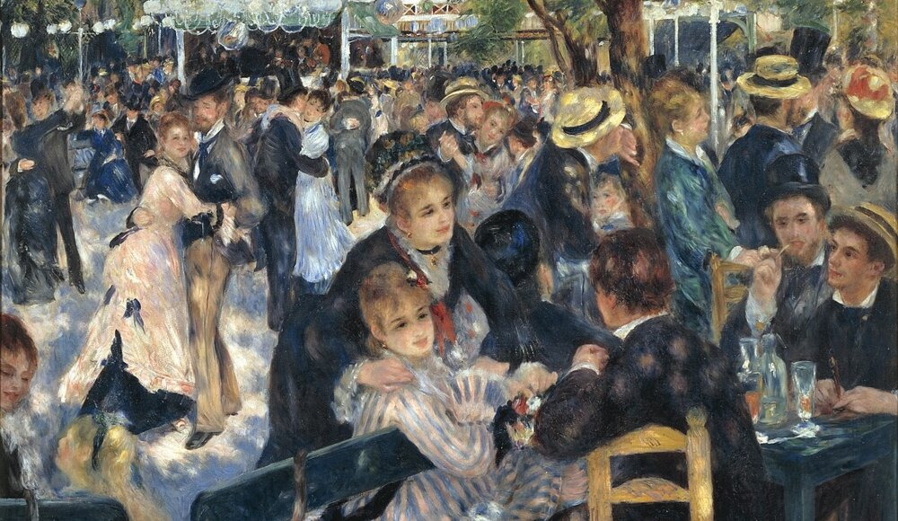
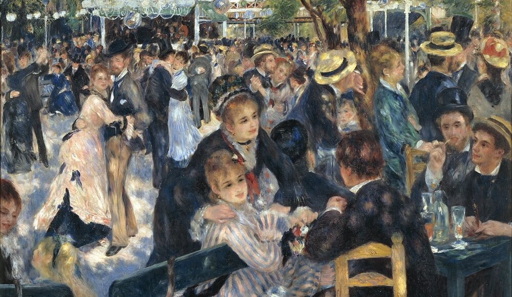

Artiesten in Harmonie
Profielen van kunstenaars wiens werken geïnspireerd zijn door muziek.

Claude Monet
Stijl: Impressionisme, Pleinairisme
Beroemd Werk: "Impression, Sunrise" (Impression, Soleil Levant, 1872), "Water Lilies" series (Nymphéas, 1896 - 1926)
Verhaal: Claude Monet staat bekend als een van de grondleggers van het impressionisme. Zijn werk kenmerkt zich door een focus op licht en de directe ervaring van de natuur. Monet's schilderijen weerspiegelen zijn diepgaande interesse in tuinieren en de reflectie van licht op water, wat culmineerde in zijn beroemde waterlelieseries die hij schilderde in zijn eigen tuin in Giverny. Zijn werken zijn een levendige weergave van de visuele realiteit met snelle, losse penseelstreken die de vluchtigheid van een moment vastleggen.

Pierre-Auguste Renoir
Stijl: Impressionisme
Beroemd Werk: "Bal du moulin de la Galette" (1876), "Luncheon of the Boating Party" (Le Déjeuner des Canotiers, 1880-1881)
Verhaal: Renoir wordt geprezen om zijn levendige licht en verzadigde kleur, vooral in zijn weergave van levendige scènes van het Parijse leven. Zijn schilderijen tonen vaak mensen in intieme en ongedwongen settings, met een bijzondere aandacht voor vrouwelijke schoonheid en sensualiteit. Renoir's werk is niet alleen herkenbaar aan de vrolijke taferelen en lichte onderwerpen maar ook aan zijn kenmerkende penseelstreken en het gebruik van heldere kleuren.
John Singer Sargent
Stijl: Realisme, Impressionisme
Beroemd Werk: "Portrait of Madame X" (Madame X, 1884), "Carnation, Lily, Lily, Rose" (1885-1886)
Verhaal: John Singer Sargent, een Amerikaanse kunstenaar, staat bekend om zijn prachtige portretten die de elite van zijn tijd vastleggen. Zijn werk combineert realistische observatie met impressionistische invloeden, wat resulteert in levendige en sfeervolle beelden. Sargent's vaardigheden in het vastleggen van de details van textiel en huidtinten maakten hem een gevierd portretschilder. Naast portretten, omvat zijn oeuvre ook landschappen en waterverfschilderijen, die zijn veelzijdigheid als kunstenaar laten zien.


 
